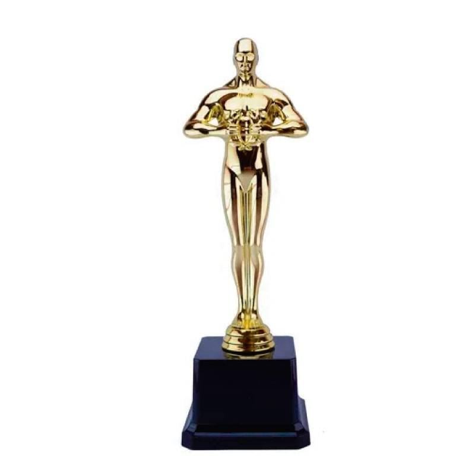
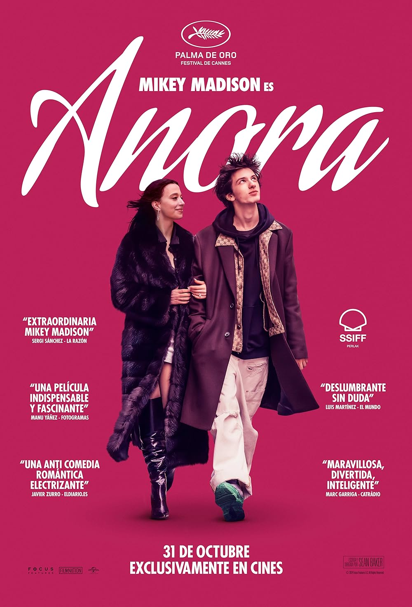

¿Qúe Son los premios oscar?
La estatuilla Oscar es el premio de mayor reconocimiento mundial. Su éxito, como símbolo del logro cinematográfico
Ganadora Mejor Pelicula
Anora
Una estríper americana de ascendencia rusa se casa con el hijo de un oligarca ruso que está estudiando en Nueva York, pero la familia del chico la considera una prostituta y envía a unos matones para convencer a la pareja de que anulen el matrimonio.
Mejor actor papel principal
Adrien Brody, “The Brutalist”
The Brutalist es una película de drama histórico épico de 2024 dirigida y producida por Brady Corbet a partir de un guion que coescribió con Mona Fastvold.
Los mejores efectos visuales
“Dune: Part Two”
Paul Atreides se une a Chani y a los Fremen mientras busca venganza contra los conspiradores que destruyeron a su familia. Paul se enfrenta a una elección entre el amor de su vida y el destino del universo, y debe evitar un futuro terrible.